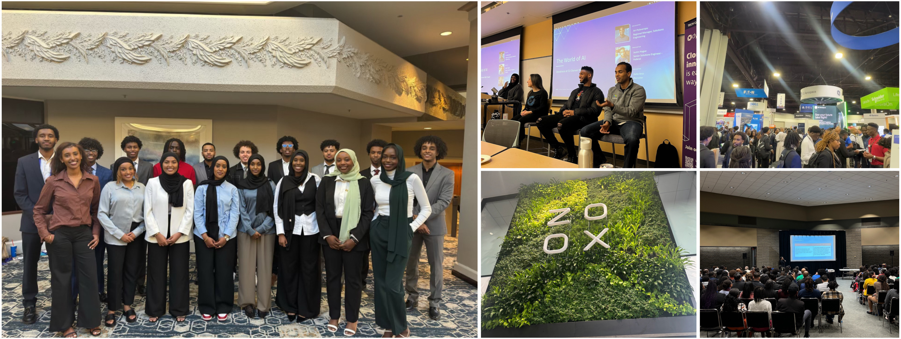
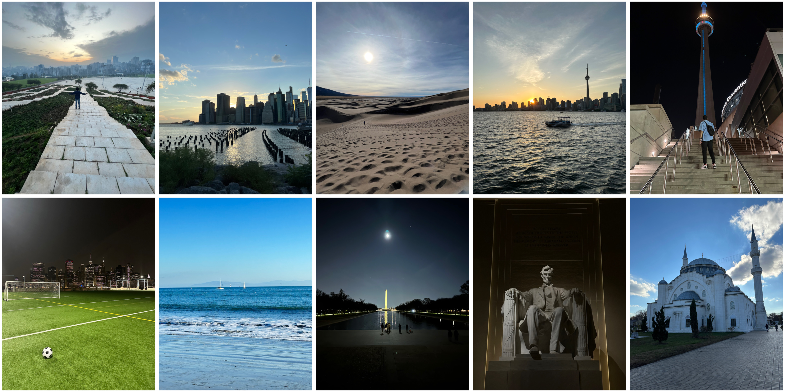
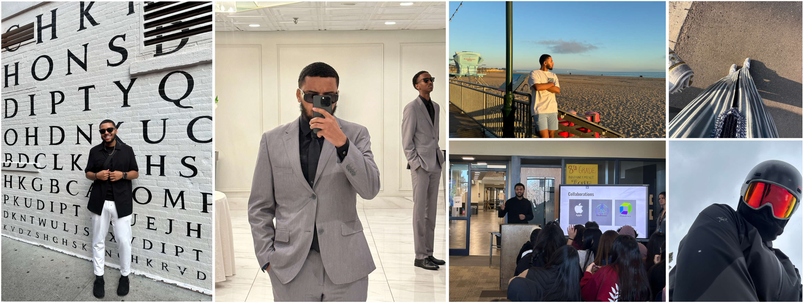

About Me
Welcome to my corner of the internet! I'm Luqman Abdurshid, a passionate and driven individual with a keen interest in technology, leadership, and exploration!

My journey is one of growth, both personally and professionally. As the current President of NSBE chapter at CU Denver, I am committed to fostering a community that empowers students in STEM fields, encouraging them to reach their fullest potential. My leadership journey is fueled by the desire to create positive change!

But there’s more to me than just work and academics. I am an adventurer at heart, with a love for exploring new places and capturing the beauty of the world around me. The images you see here are glimpses into my travels and the moments that inspire me. From the serene beaches and bustling cityscapes to the quiet solitude of nature, I find joy in discovering the unknown and sharing those experiences with others.


Thank you for visiting my site! I hope you enjoy exploring my journey as much as I enjoy living it. Whether you're here to connect professionally or simply share in the joy of exploration, I'm always excited to meet new people and engage in meaningful conversations. Feel free to reach out through the links provided—I’d love to hear from you!